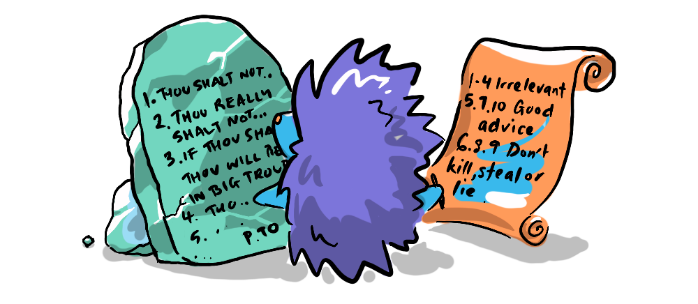

A short one, just to clarify a term (I invented) that gets thrown around here a bit.
"... when we think about what matters, what matters is consciousness and its contents. Consciousness is everything." - Sam Harris
When dealing with matters of morality, we are dealing with the realm of subjective experience, whether you want to call it consciousness, or sentience, it is the unit of value we are measuring in any moral calculus. Many take this to mean that moral value is an invention of humanity, that we make it up, so to speak, which gives the impression that it is ultimately arbitrary.
"... let us see that the distinction of vice and virtue is not founded merely on the relations of objects, nor is perceived by reason." - David Hume
However, I would argue that this is not the case, and that we can draw objective conclusions concerning the inter-subjective relationships between moral agents. This is because evolution has produced, in us, subjective facts which are bound to our biology (physical reality).
Our evolutionary hardwiring is not easily untangled, it is embedded in myriad mechanisms, drivers, inhibitors and behaviour modifiers. But at the core is sensation and its poles pleasure and pain. Pain tells us to avoid the behaviour, pleasure to seek it. Pain is inherently "bad" and pleasure inherently "good"—moral properties. These experiences are inescapably value-laden. They are nature’s way of creating a "should" from a fact of biology—overcoming Hume's Guillotine of "No 'ought' from 'is'". They are the intersection of the dimensions of physical and moral. I would posit that all our are derived from the spectrum of these inescapably value-laden experiences.
I've claimed that subjective experience is the unit of value at stake in moral interactions, and the analogy to currency helps to clarify it further. We can understand that the value of money is somewhat plastic, as is subjective experience and yet we can account for it. The accounting of a currency is objective, and is independent of the value of that currency. Our inescapably value-laden experiences are akin to the gold standard. Just as the former* gold standard provided a baseline that grounded currency values, our universal aversion to extreme pain provides a stable reference point for moral accounting.
Given that experiences are inescapably value-laden, it is therefore possible to objectively deduce principles for inter-subjective relations (moral principles) that reliably serve the interests of moral agents who want to avoid suffering.
SOME OBJECTIONS (and one-line replies)
- Some forms of pain are pleasurable: In this case they no longer qualify as suffering.
- Sometimes inflicting pain is warranted, like when a personal trainer pushes their client: This is merely a trade-off as part of a more complicated pursuit of pleasure (the pleasure of future achievement).
- Because morality concerns subjectivity, we cannot, by definition, make objective statements about it: This is mistaking the content of the deductive process for the deductive process itself; it is possible to make objective conclusions about subjective content.
- There is no dictate that says well-being is the desired outcome of morality, or that we have any responsibility to adhere to such rules: This is merely a question of definitions, essentially a semantic argument or word-game.
This inescapable relationship between the quality of experience and the moral values of good and bad, make morality rationalisable, and mean that we can argue meaningfully towards objectively better moral frameworks. I expand on this idea in...